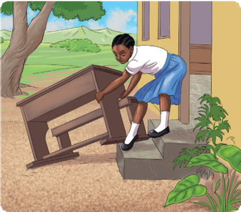
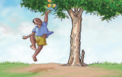

Using ‘too…to’
(a) Study the picture and read the information in the speech bubble and sentences provided.
Then, answer the questions that follow.
It’s too heavy.

The desk is heavy.
She can’t lift it.
The desk is too heavy to lift.
Questions
1. Is the desk heavy? (Yes/No), [[blank:item-1]].
2. Can the girl lift the desk? (Yes/No), [[blank:item-2]].
3. Why can’t the girl lift the desk?
4. What is too heavy to be lifted?
(b) Study the picture and read the sentences provided.

The boy is too short.
He can’t pick the mangoes from the tree.
The boy is too short to pick the mangoes from the tree.